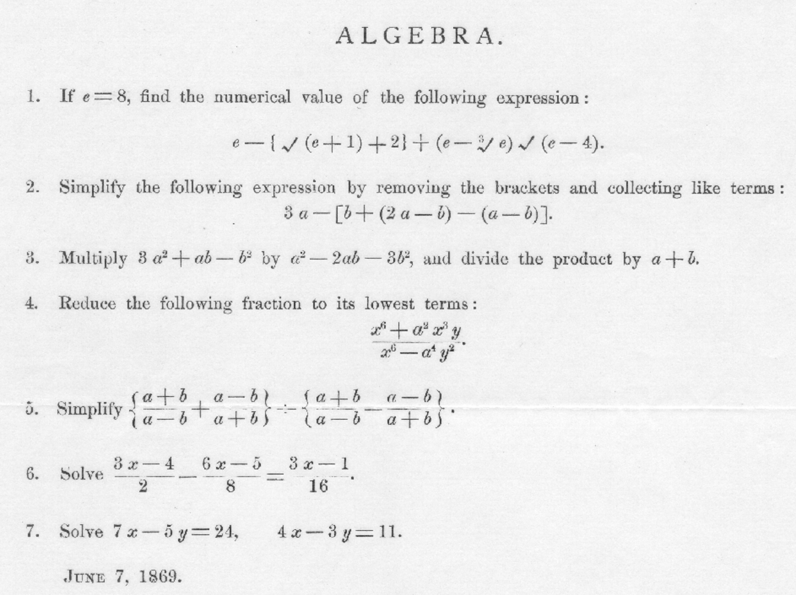

S.Albayrak Anasayfa Kategoriler
[next] [prev] [prev-tail] [tail] [up]
İngilizce ve lise düzeyinde matematik bilen birinin kolaylıkla farkedebileceği gibi sorular gerçekten çok kolaymış!1

1 https://alum.mit.edu/slice/could-you-have-gotten-mit-1869
[next] [prev] [prev-tail] [front] [up]